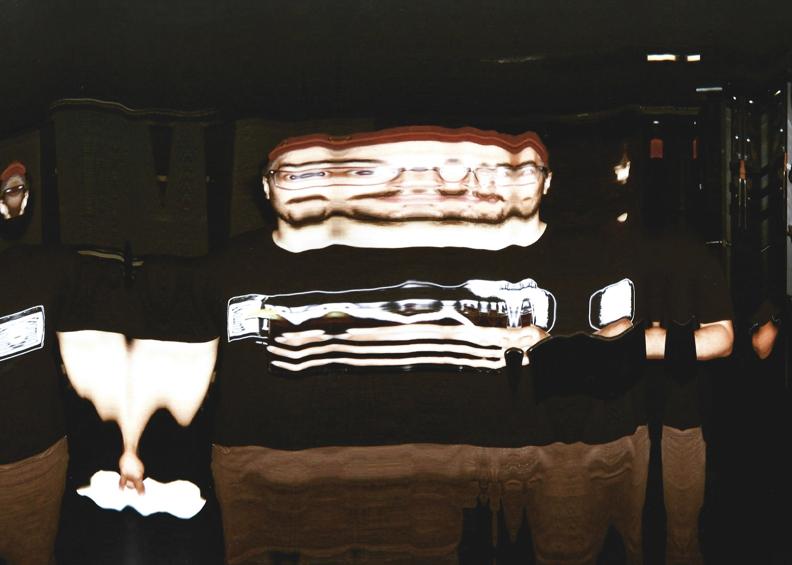
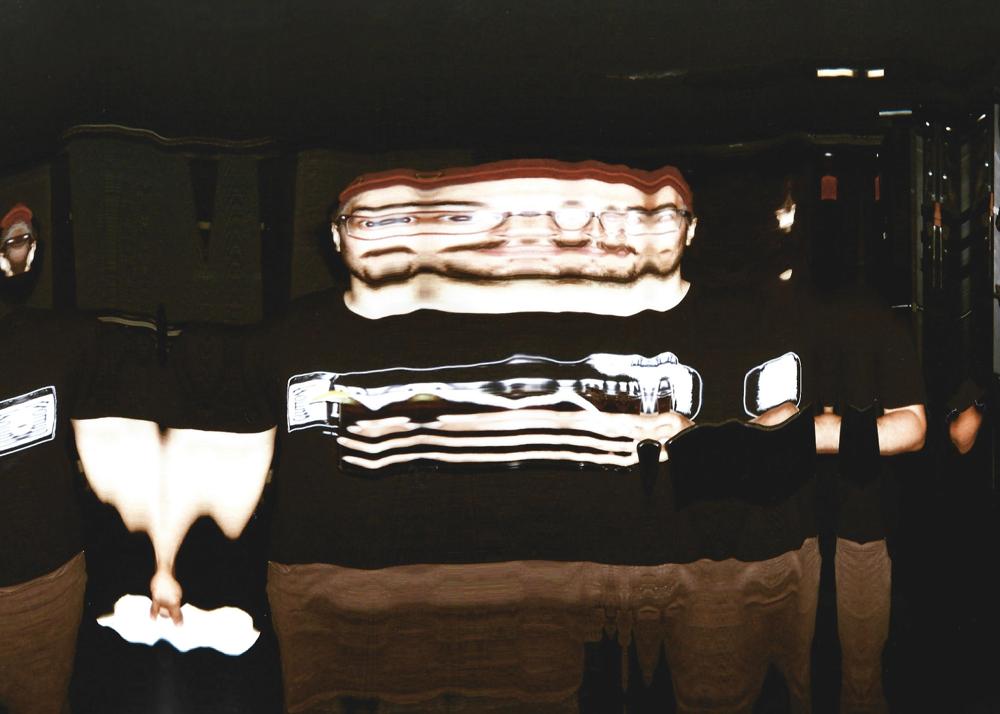

WILFREDO HERRERA originates from the vibrant island of Puerto Rico from Cuban immigrants. As
a person who enjoys learning new technologies, Fredo has delved into different mediums (like
filmmaking, web development, and visual arts), exploring the landscape for new skills to
master.
He went to university in the U.S. to study his favorite subject- movies, and got a
Bachelor's
Degree in Film.
Fredo works in productions in
various roles, including as cinematographer for the short films DYNAMITE
ABRAHAM: A DOCUMENTARY, shot on Super 8mm and the upcoming SEXY BITCH, shot digitally in N.Y.; as
well
as editor and director of the music video for the single
THUNDER by the Boston band Pyramid Thieves. He also has experience as a gaffer and
sound
person.
Fredo started exploring analog video mixers, the world wide web, and visual programming
languages thanks to an intro to video signals class offered by the collective PhaseSpace
(now
Wavefield) based out of Bushwick, N.Y. He aims to create visual pieces that stimulate the
brain
in conjuction with curated music.
He creates mixes under the pseudonym fredonaut -
Fredo currently resides in New York, focusing on producing short films, digital/analog
video manipulation, generative art, and web development. He welcomes all artistic
collaborations. ☻
CV can be found here
 
